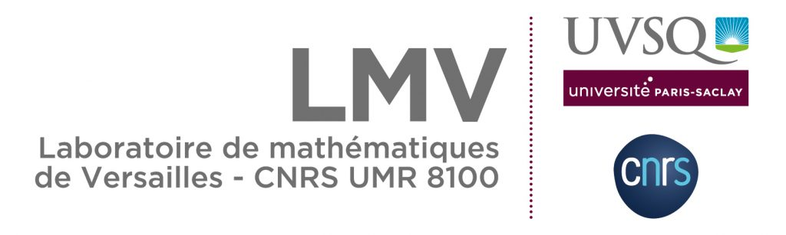
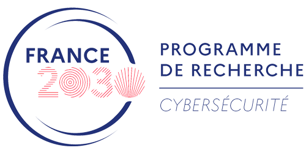

Home
The 14th edition of the biannual Workshop on Coding and Cryptography (WCC) will take place from June 8 to 12, 2026, at the Inria Research Center in Paris, located in the 13th arrondissement of Paris, France.
Invited Speakers
- Itai Dinur (Ben Gurion University)
- Lukas Kölsch (University of South Florida)
- Frédérique Oggier (University of Birmingham)
- Olga Polverino (Universita degli Studi dellà Campania Luigi Vanvitelli, Caserta)
Conference Topics
The research topics of the event include but are not limited to:
Coding theory: error-correcting codes, decoding algorithms, quantum codes, related combinatorial problems;
Algorithmic and theoretical aspects of cryptology: symmetric cryptology, public-key cryptography, cryptanalysis, quantum cryptography;
Discrete mathematics and algorithmic tools related to these two areas, such as: Boolean functions, sequences, finite fields, finite geometry, combinatorics, related algebraic systems.
Sponsoring
We thank the following insitutions for their financial help for WCC 2026

